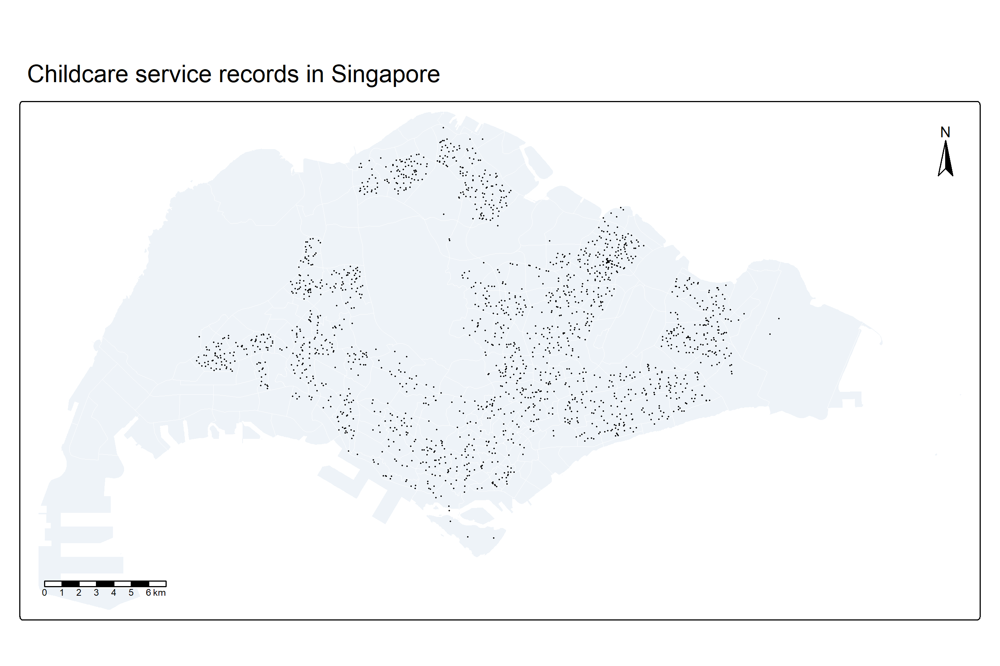
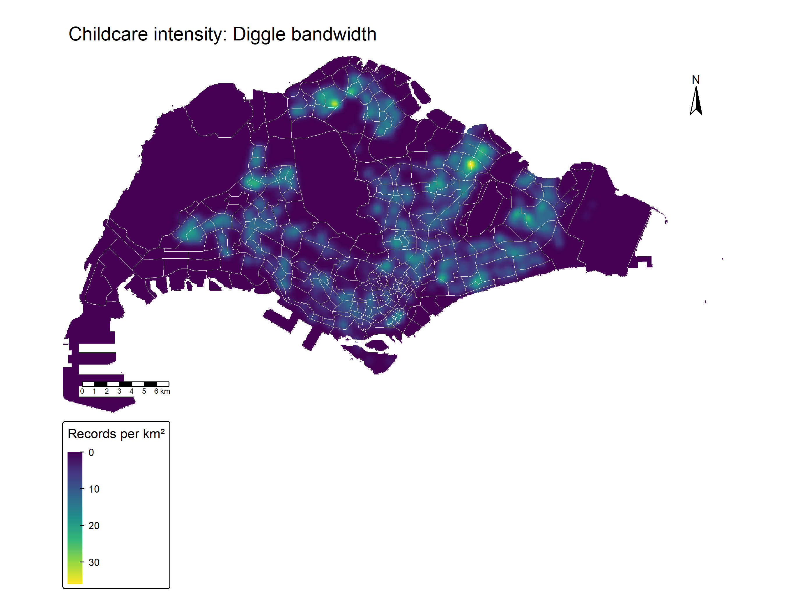
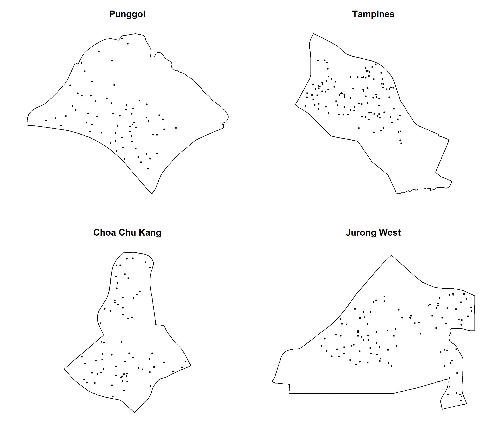

First-order spatial point patterns and childcare intensity
Author
Zhenhua Liu
Published
September 19, 2026
Overview
Where are childcare services concentrated, and how much does the answer depend on the observation window and smoothing method? I use Singapore’s childcare locations to examine intensity at national and planning-area scales. A nearest-neighbour test provides a benchmark against spatial randomness; kernel density estimation (KDE) then shows where concentrations occur. These are complementary summaries, not a measure of whether local demand is adequately served.
This exercise follows the workflow in course Chapter 4. The next page, Hands-on Exercise 2B, examines spatial relationships over a range of distances.
1. Setup and source data
sf handles vector geometry, the spatstat component packages provide planar point-pattern analysis, and terra carries the density raster into tmap. dplyr supplies the attribute filtering used to define the study region. Packages are installed before rendering, so the page never changes its environment halfway through an analysis.
library(sf)
Linking to GEOS 3.14.1, GDAL 3.12.1, PROJ 9.7.1; sf_use_s2() is TRUE
library(dplyr)
Attaching package: 'dplyr'
The following objects are masked from 'package:stats':
filter, lag
The following objects are masked from 'package:base':
intersect, setdiff, setequal, union
library(spatstat.geom)
Loading required package: spatstat.data
Loading required package: spatstat.univar
spatstat.univar 3.2-0
spatstat.geom 3.8-3
library(spatstat.explore)
Loading required package: spatstat.random
spatstat.random 3.5-1
Loading required package: nlme
Attaching package: 'nlme'
The following object is masked from 'package:dplyr':
collapse
spatstat.explore 3.8-2
library(spatstat.random)library(terra)
terra 1.9.50
Attaching package: 'terra'
The following objects are masked from 'package:spatstat.geom':
area, delaunay, is.empty, rescale, rotate, shift, where.max,
where.min
library(tmap)
Registered S3 method overwritten by 'stars':
method from
st_interpolate_aw.stars sf
The ECDA portal describes this layer as December 2021 data, despite its 2026 portal update. These maps describe that historical service snapshot, downloaded in September 2026. They should not be presented as a current inventory. Both GeoJSON files already contain separate attributes, so no HTML-description parsing is needed.
dataset records geometry epsg empty invalid
1 Child Care Services 1925 POINT 4326 0 0
2 MP2019 subzones 332 MULTIPOLYGON 4326 0 6
2. Geometry, CRS and the observation window
I transform both layers to SVY21 / Singapore TM (EPSG:3414) so coordinates and distances are in metres. st_transform() changes coordinate values; assigning a CRS label alone would not perform that conversion. I validate the polygons and use the course’s exclusions for the Southern Group, Western Islands and North-Eastern Islands. This is a specified administrative study window, not a claim that every remaining square metre is habitable land.
Dissolving subzone boundaries with st_union() produces one region for as.owin(). An owin stores the observation boundary; a ppp stores events inside that boundary. Using the points’ bounding rectangle instead would include unobserved sea and change both expected density and simulated patterns.
stopifnot(!any(st_is_empty(childcare_raw)), !any(st_is_empty(subzones_raw)),all(st_geometry_type(childcare_raw) =="POINT"))childcare <-st_transform(childcare_raw, 3414)subzones <-st_transform(st_make_valid(subzones_raw), 3414)subzones <-filter(subzones, SUBZONE_N !="SOUTHERN GROUP",!PLN_AREA_N %in%c("WESTERN ISLANDS", "NORTH-EASTERN ISLANDS"))stopifnot(st_crs(childcare) ==st_crs(subzones), !st_is_longlat(childcare))singapore <-st_union(subzones)sg_window <-as.owin(singapore)xy <-st_coordinates(childcare)inside <-inside.owin(xy[, 1], xy[, 2], sg_window)duplicate_location <-duplicated(as.data.frame(xy))# Co-located records may be different operators. Keep them for service intensity.childcare_ppp <-ppp(xy[inside, 1], xy[inside, 2], window = sg_window,checkdup =FALSE)unitname(childcare_ppp) <-c("metre", "metres")childcare_unique <-unique(childcare_ppp)quality_audit <-data.frame(measure =c("Imported records", "Retained subzones", "Outside study window","Records at repeated coordinates (beyond first)", "Records in window","Distinct locations in window", "Study area (km2)"),value =c(nrow(childcare), nrow(subzones), sum(!inside), sum(duplicate_location),npoints(childcare_ppp), npoints(childcare_unique), area.owin(sg_window) /1e6))quality_audit
measure value
1 Imported records 1925.0000
2 Retained subzones 327.0000
3 Outside study window 0.0000
4 Records at repeated coordinates (beyond first) 187.0000
5 Records in window 1925.0000
6 Distinct locations in window 1738.0000
7 Study area (km2) 669.5167
The audit retains 1925 service records at 1738 distinct coordinates. There are 187 records beyond the first at repeated coordinates and 0 points outside the window. Repeated coordinates are not enough evidence to delete a service: several operators or records can share a building. I retain records for provision intensity and also test distinct locations as a sensitivity check. No random jitter is added to manufacture separation.
tmap_mode("plot")
ℹ tmap modes "plot" - "view"
ℹ toggle with `tmap::ttm()`
tm_shape(subzones) +tm_polygons(fill ="#eef3f8", col ="white", lwd =0.2) +tm_shape(childcare[inside, ]) +tm_dots(col ="#465d91", size =0.025) +tm_title("Childcare service records in Singapore") +tm_scalebar(position =tm_pos_in("left", "bottom")) +tm_compass(position =tm_pos_in("right", "top"))

Historical childcare service records within the selected MP2019 study window.
The overlay checks spatial alignment and reveals uneven concentrations. Large low-density areas include land that is not primarily residential, so national homogeneous randomness is a deliberately simple reference model.
3. Nearest-neighbour analysis
The Clark–Evans ratio compares observed mean nearest-neighbour distance with the homogeneous Poisson expectation. Values below one indicate shorter separations. I specify a one-sided clustering alternative for this national question, with a 5% significance threshold.
I show both the asymptotic approximation and 999 Monte Carlo simulations. The latter places the same number of points uniformly inside the actual window and applies the same uncorrected statistic to observed and simulated patterns. This accounts for window shape in the reference distribution, although the uncorrected ratio itself still has edge bias. Nearest-neighbour statistics involve interpoint distances; their inclusion here follows the course’s sequence, while KDE is the main first-order intensity method.
analysis R p
1 Service records: normal approximation 0.5353162 0.000
2 Service records: Monte Carlo 0.5353162 0.001
3 Distinct locations: Monte Carlo 0.6104213 0.001
The record-level ratio is 0.535, with simulated p = 0.001. After collapsing co-located records, R becomes 0.61 and p becomes 0.001. The comparison separates the contribution of shared coordinates from the broader geographic pattern. With 999 simulations, the smallest attainable one-sided Monte Carlo p-value is 0.001; it is never zero.
For planning, a departure from uniform randomness means that service locations are spatially uneven. It does not establish oversupply, undersupply, or a causal attraction between providers. Residential distribution is an obvious omitted factor.
4. Bandwidth selection and density units
Bandwidth controls the scale at which a concentration is visible. I compute four selectors rather than importing the numerical bandwidth printed in the lesson. Scott’s rule returns separate x and y smoothing scales, so its two values should not be mistaken for two competing scalar solutions.
units maximum integrated_records
1 records / m2 3.586835e-05 1928.254
2 records / km2 3.586835e+01 1928.254
The two computations describe the same surface. Rescaling coordinates from metres to kilometres multiplies density values by one million. I verify that identity numerically, using matched 100 m cells. The raster integral is a useful diagnostic against the input count; pixel discretisation and boundary correction mean it need not reproduce the count exactly. Small negative values close to machine precision are numerical convolution artefacts, not negative services.
Diggle and likelihood bandwidths, with a shared intensity scale in records per km². Map coordinates are kilometres.
A narrower bandwidth preserves more local peaks; a wider bandwidth merges nearby peaks into broader concentrations. I use the same colour limits so differences are not created by separately stretched legends.
5. Kernel shape, fixed and adaptive smoothing
First I hold bandwidth constant and change the kernel. This isolates kernel shape from bandwidth selection, with the same spatial resolution and intensity scale throughout.
Gaussian, Epanechnikov, quartic and disc kernels at the same Diggle bandwidth; records per km².
The compact-support kernels assign no contribution beyond their support, whereas a Gaussian kernel decays gradually. Broad concentrations should be read across the panels; an isolated bright pixel is not evidence of a statistically significant hotspot.
Next I compare the lesson’s 600 m fixed bandwidth with an adaptive kernel estimate. The adaptive method allows local smoothing scales to vary with the pilot intensity, which can retain detail where records are dense.
Fixed 600 m and adaptive kernel estimates on a shared records-per-km² scale.
Adaptive smoothing changes the estimator, so differences cannot be attributed only to a single bandwidth value. Neither surface adjusts for population or centre capacity. A high value describes many records per land area.
6. A geographically correct KDE map
ImportantRaster values and map coordinates use different units
EPSG:3414 requires metre coordinates. Assigning it to an image whose coordinates were divided by 1,000 would put the raster in the wrong place. I convert the metre-coordinate image to SpatRaster, multiply only its density values by one million, and then attach EPSG:3414. The subzone overlay and scale bar are therefore geographically consistent.
# Keep the raster coordinates in metres, but convert its VALUES to records/km2.kde_raster <-rast(kde_m) *1e6crs(kde_raster) <-"EPSG:3414"names(kde_raster) <-"records_km2"stopifnot(all(abs(as.vector(ext(kde_raster)) -c(kde_m$xrange, kde_m$yrange)) <1e-5))tm_shape(kde_raster) +tm_raster(col ="records_km2", col.scale =tm_scale_continuous(values ="viridis"),col.legend =tm_legend(title ="Records per km²")) +tm_shape(subzones) +tm_borders(col ="white", lwd =0.2) +tm_title("Childcare intensity: Diggle bandwidth") +tm_compass(position =tm_pos_in("right", "top")) +tm_scalebar(position =tm_pos_in("left", "bottom")) +tm_layout(frame =FALSE)

Childcare service intensity, with correctly aligned MP2019 boundaries and a continuous sequential legend.
I retain a continuous sequential palette because KDE is a continuous estimate. Discretising it into quantiles would change the visual message to relative ranks and hide the numeric gap between intensities.
7. Planning-area comparison
The four local windows are Punggol, Tampines, Choa Chu Kang and Jurong West. Although the source boundary contains subzones, the comparisons below are at planning-area level after dissolving the relevant subzones.
planning_area records locations km2 records_per_km2
PUNGGOL PUNGGOL 72 65 9.374274 7.680595
TAMPINES TAMPINES 117 105 20.795431 5.626236
CHOA CHU KANG CHOA CHU KANG 74 67 6.117294 12.096852
JURONG WEST JURONG WEST 110 99 14.680536 7.492914
old <-par(mfrow =c(2, 2), mar =c(2, 2, 3, 1))for (nm in area_names) plot(spatstat.geom::rescale(area_patterns[[nm]], 1000, "km"),main = tools::toTitleCase(tolower(nm)), pch =16, cex =0.5)

Service records in the four planning-area windows; coordinates are kilometres.
par(old)
Choa Chu Kang has 12.1 records/km² compared with 5.6 in Tampines. This is an area-normalised comparison, not a ranking of service adequacy. The actual distribution inside each polygon is still important.
area R p
CHOA CHU KANG CHOA CHU KANG 0.8409673 0.002
TAMPINES TAMPINES 0.6681710 0.002
Here the alternative is two-sided: either unusually short or unusually long nearest-neighbour distances would be relevant. I explicitly select method = "MonteCarlo"; supplying nsim alone does not change the default asymptotic method. These two comparisons are exploratory.
Planning-area KDE with area-specific Diggle bandwidths and common intensity limits; records per km².
Each bandwidth is fitted within its own window, so fine detail is not equally resolved in all panels. The common legend supports intensity comparison; a common fixed bandwidth would be preferable for a strictly matched smoothing comparison. Local boundary correction cannot represent cross-boundary access to a nearby centre in another planning area.
8. Interactive lookup
The map supports centre-name and address lookup. External background tiles require an internet connection; the analytical figures above are locally rendered assets and remain available independently of the tile provider.
The observation window is part of the statistical model, not just a cartographic frame. Counting service records and counting distinct locations are different questions, especially when several records share a coordinate. I also found that density units and coordinate units must be checked separately: a convincing colour surface can still be geographically wrong if its extent is mislabelled.
The most useful next extension would relate service capacity to the residential population of young children and realistic travel distances. This exercise alone cannot identify unmet demand or explain why providers locate together.
Reproducibility and references
All executed code is supplied in R/prepare.R and R/analysis.R. The page reads those labelled sections directly, so the displayed code and executed code have one source. Run the download script once, then quarto render . --execute from the repository root to rebuild the whole site. The shared preparation also allows 2B to render independently. Raw and derived data stay in ignored folders. data/README.md records the sources, checksums and assumptions.
---title: "Hands-on Exercise 2A"subtitle: "First-order spatial point patterns and childcare intensity"author: "Zhenhua Liu"date: "2026-09-19"body-classes: exercise-pagetoc: truetoc-location: rightcode-fold: falsecode-tools: trueexecute: freeze: true echo: true warning: true message: false error: false---```{r}#| label: register-code#| include: falseknitr::read_chunk("handson2A/R/prepare.R")knitr::read_chunk("handson2A/R/analysis.R")knitr::opts_chunk$set(fig.width =9, fig.height =6, dpi =150)```## OverviewWhere are childcare services concentrated, and how much does the answer dependon the observation window and smoothing method? I use Singapore's childcarelocations to examine intensity at national and planning-area scales. A nearest-neighbourtest provides a benchmark against spatial randomness; kernel density estimation(KDE) then shows where concentrations occur. These are complementary summaries,not a measure of whether local demand is adequately served.This exercise follows the workflow in [course Chapter 4](https://r4gdsa.netlify.app/chap04.html).The next page, [Hands-on Exercise 2B](../handson2B/index.qmd), examines spatialrelationships over a range of distances.## 1. Setup and source data`sf` handles vector geometry, the `spatstat` component packages provide planarpoint-pattern analysis, and `terra` carries the density raster into `tmap`.`dplyr` supplies the attribute filtering used to define the study region.Packages are installed before rendering, so the page never changes its environmenthalfway through an analysis.```{r}#| label: packages```I use the official [ECDA Child Care Services GeoJSON](https://data.gov.sg/datasets/d_5d668e3f544335f8028f546827b773b4/view)and [URA Master Plan 2019 Subzone Boundary (No Sea)](https://data.gov.sg/datasets/d_8594ae9ff96d0c708bc2af633048edfb/view).The download routine is provided in [`R/download-data.R`](R/download-data.R).`NAME` and `ADDRESSSTREETNAME` describe each service; `PLN_AREA_N` and `SUBZONE_N`identify the administrative units.::: {.callout-note title="The data date is not the download date"}The ECDA portal describes this layer as **December 2021 data**, despite its2026 portal update. These maps describe that historical service snapshot,downloaded in September 2026. They should not be presented as a current inventory.Both GeoJSON files already contain separate attributes, so no HTML-descriptionparsing is needed.:::```{r}#| label: import```## 2. Geometry, CRS and the observation windowI transform both layers to **SVY21 / Singapore TM (EPSG:3414)** so coordinatesand distances are in metres. `st_transform()` changes coordinate values;assigning a CRS label alone would not perform that conversion. I validate thepolygons and use the course's exclusions for the Southern Group, Western Islandsand North-Eastern Islands. This is a specified administrative study window,not a claim that every remaining square metre is habitable land.Dissolving subzone boundaries with `st_union()` produces one region for`as.owin()`. An `owin` stores the observation boundary; a `ppp` stores eventsinside that boundary. Using the points' bounding rectangle instead would includeunobserved sea and change both expected density and simulated patterns.```{r}#| label: prepare-window```The audit retains **`r npoints(childcare_ppp)` service records** at**`r npoints(childcare_unique)` distinct coordinates**. There are`r sum(duplicate_location)` records beyond the first at repeated coordinates and`r sum(!inside)` points outside the window. Repeated coordinates are not enoughevidence to delete a service: several operators or records can share a building.I retain records for provision intensity and also test distinct locations as asensitivity check. No random jitter is added to manufacture separation.```{r}#| label: national-map#| fig-cap: "Historical childcare service records within the selected MP2019 study window."#| fig-alt: "Map of Singapore subzones overlaid with childcare service points."```The overlay checks spatial alignment and reveals uneven concentrations. Largelow-density areas include land that is not primarily residential, so nationalhomogeneous randomness is a deliberately simple reference model.## 3. Nearest-neighbour analysisThe Clark–Evans ratio compares observed mean nearest-neighbour distance withthe homogeneous Poisson expectation. Values below one indicate shorterseparations. I specify a one-sided clustering alternative for this nationalquestion, with a 5% significance threshold.I show both the asymptotic approximation and 999 Monte Carlo simulations.The latter places the same number of points uniformly inside the actualwindow and applies the same uncorrected statistic to observed and simulatedpatterns. This accounts for window shape in the reference distribution, althoughthe uncorrected ratio itself still has edge bias. Nearest-neighbour statisticsinvolve interpoint distances; their inclusion here follows the course's sequence,while KDE is the main first-order intensity method.```{r}#| label: nearest-neighbour```The record-level ratio is **`r round(unname(ce_mc$statistic), 3)`**, with simulatedp = **`r format(ce_mc$p.value, scientific = FALSE)`**. After collapsing co-locatedrecords, R becomes **`r round(unname(ce_unique$statistic), 3)`** and p becomes**`r format(ce_unique$p.value, scientific = FALSE)`**. The comparison separatesthe contribution of shared coordinates from the broader geographic pattern.With 999 simulations, the smallest attainable one-sided Monte Carlo p-value is0.001; it is never zero.For planning, a departure from uniform randomness means that service locationsare spatially uneven. It does not establish oversupply, undersupply, or a causalattraction between providers. Residential distribution is an obvious omitted factor.## 4. Bandwidth selection and density unitsBandwidth controls the scale at which a concentration is visible. I compute fourselectors rather than importing the numerical bandwidth printed in the lesson.Scott's rule returns separate x and y smoothing scales, so its two values shouldnot be mistaken for two competing scalar solutions.```{r}#| label: bandwidths```The Diggle result is **`r round(as.numeric(bw_diggle) * 1000)` m**; likelihoodcross-validation gives **`r round(as.numeric(bw_ppl) * 1000)` m**. The tabledocuments how far alternative selectors move the scale of the question.```{r}#| label: kde-units```The two computations describe the same surface. Rescaling coordinates frommetres to kilometres multiplies density values by one million. I verify thatidentity numerically, using matched 100 m cells. The raster integral is a usefuldiagnostic against the input count; pixel discretisation and boundary correctionmean it need not reproduce the count exactly. Small negative values close tomachine precision are numerical convolution artefacts, not negative services.```{r}#| label: bandwidth-comparison#| fig-cap: "Diggle and likelihood bandwidths, with a shared intensity scale in records per km². Map coordinates are kilometres."#| fig-alt: "Two comparable childcare kernel density maps using different bandwidth selectors."```A narrower bandwidth preserves more local peaks; a wider bandwidth merges nearbypeaks into broader concentrations. I use the same colour limits so differencesare not created by separately stretched legends.## 5. Kernel shape, fixed and adaptive smoothingFirst I hold bandwidth constant and change the kernel. This isolates kernelshape from bandwidth selection, with the same spatial resolution and intensityscale throughout.```{r}#| label: kernel-comparison#| fig-height: 8#| fig-cap: "Gaussian, Epanechnikov, quartic and disc kernels at the same Diggle bandwidth; records per km²."#| fig-alt: "Four childcare density surfaces comparing kernel shapes."```The compact-support kernels assign no contribution beyond their support, whereasa Gaussian kernel decays gradually. Broad concentrations should be read acrossthe panels; an isolated bright pixel is not evidence of a statistically significant hotspot.Next I compare the lesson's **600 m fixed bandwidth** with an adaptive kernelestimate. The adaptive method allows local smoothing scales to vary with thepilot intensity, which can retain detail where records are dense.```{r}#| label: adaptive-kde#| fig-cap: "Fixed 600 m and adaptive kernel estimates on a shared records-per-km² scale."#| fig-alt: "Side-by-side fixed and adaptive childcare density estimates."```Adaptive smoothing changes the estimator, so differences cannot be attributedonly to a single bandwidth value. Neither surface adjusts for population orcentre capacity. A high value describes many records per land area.## 6. A geographically correct KDE map::: {.callout-important title="Raster values and map coordinates use different units"}EPSG:3414 requires metre coordinates. Assigning it to an image whose coordinateswere divided by 1,000 would put the raster in the wrong place. I convert the**metre-coordinate image** to `SpatRaster`, multiply only its **density values**by one million, and then attach EPSG:3414. The subzone overlay and scale bar aretherefore geographically consistent.:::```{r}#| label: cartographic-kde#| fig-height: 7#| fig-cap: "Childcare service intensity, with correctly aligned MP2019 boundaries and a continuous sequential legend."#| fig-alt: "Cartographic childcare kernel density map with boundaries, compass and scale bar."```I retain a continuous sequential palette because KDE is a continuous estimate.Discretising it into quantiles would change the visual message to relativeranks and hide the numeric gap between intensities.## 7. Planning-area comparisonThe four local windows are Punggol, Tampines, Choa Chu Kang and Jurong West.Although the source boundary contains subzones, the comparisons below are at**planning-area** level after dissolving the relevant subzones.```{r}#| label: planning-areas``````{r}#| label: area-pattern-map#| fig-height: 8#| fig-cap: "Service records in the four planning-area windows; coordinates are kilometres."#| fig-alt: "Childcare point patterns in Punggol, Tampines, Choa Chu Kang and Jurong West."```Choa Chu Kang has `r round(area_summary$records_per_km2[area_summary$planning_area == 'CHOA CHU KANG'], 1)`records/km² compared with `r round(area_summary$records_per_km2[area_summary$planning_area == 'TAMPINES'], 1)`in Tampines. This is an area-normalised comparison, not a ranking of serviceadequacy. The actual distribution inside each polygon is still important.```{r}#| label: area-tests```Here the alternative is two-sided: either unusually short or unusually longnearest-neighbour distances would be relevant. I explicitly select`method = "MonteCarlo"`; supplying `nsim` alone does not change the defaultasymptotic method. These two comparisons are exploratory.```{r}#| label: area-kde#| fig-height: 8#| fig-cap: "Planning-area KDE with area-specific Diggle bandwidths and common intensity limits; records per km²."#| fig-alt: "Four planning-area childcare kernel density maps."```Each bandwidth is fitted within its own window, so fine detail is not equallyresolved in all panels. The common legend supports intensity comparison; acommon fixed bandwidth would be preferable for a strictly matched smoothingcomparison. Local boundary correction cannot represent cross-boundary accessto a nearby centre in another planning area.## 8. Interactive lookupThe map supports centre-name and address lookup. External background tilesrequire an internet connection; the analytical figures above are locallyrendered assets and remain available independently of the tile provider.```{r}#| label: interactive-points```## 9. What I learnedThe observation window is part of the statistical model, not just a cartographicframe. Counting service records and counting distinct locations are differentquestions, especially when several records share a coordinate. I also found thatdensity units and coordinate units must be checked separately: a convincingcolour surface can still be geographically wrong if its extent is mislabelled.The most useful next extension would relate service capacity to the residentialpopulation of young children and realistic travel distances. This exercise alonecannot identify unmet demand or explain why providers locate together.## Reproducibility and referencesAll executed code is supplied in [`R/prepare.R`](R/prepare.R) and[`R/analysis.R`](R/analysis.R). The page reads those labelled sections directly,so the displayed code and executed code have one source. Run the download scriptonce, then `quarto render . --execute` from the repository root to rebuild thewhole site. The shared preparation also allows 2B to render independently.Raw and derived data stay in ignored folders. [`data/README.md`](data/README.md)records the sources, checksums and assumptions.Method references: [course Chapter 4](https://r4gdsa.netlify.app/chap04.html),[spatstat documentation](https://spatstat.org/),[adaptive density reference](https://search.r-project.org/CRAN/refmans/spatstat.explore/html/adaptive.density.html),and [sf coordinate transformations](https://r-spatial.github.io/sf/reference/st_transform.html).```{r}#| label: session-info#| echo: falsesessionInfo()```